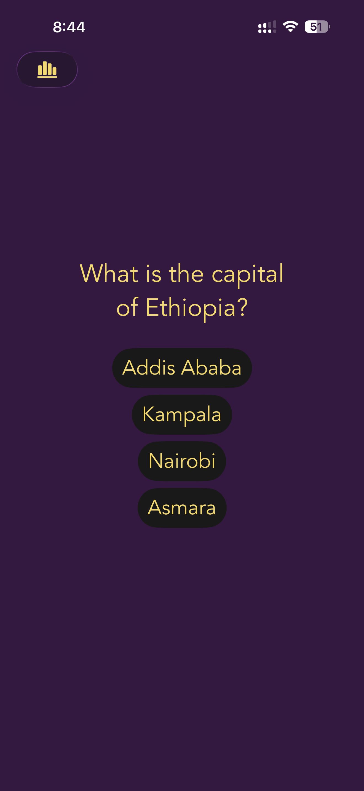
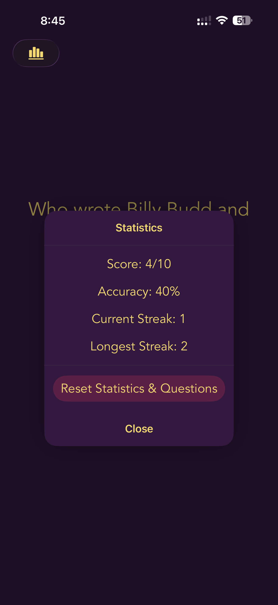
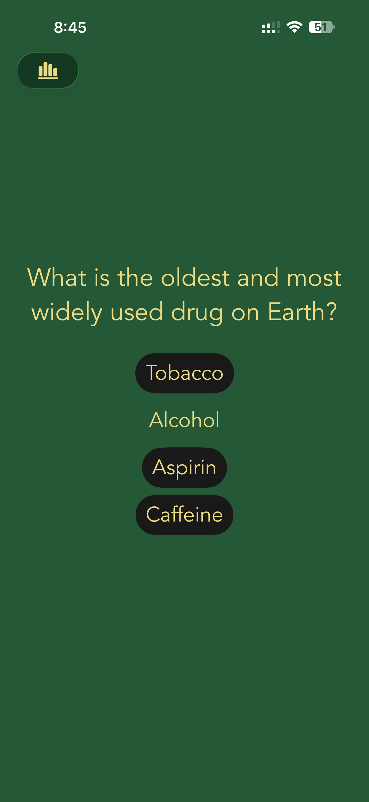
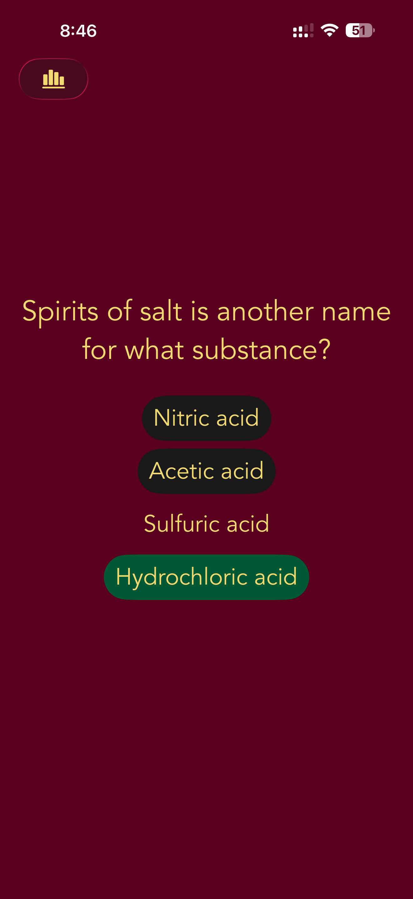

Snapshot of current spending
Total spend, transaction count, recent activity, and category breakdown in one place with selectable date ranges.
Fisca is a personal finance app built for everyday clarity. Log expenses in seconds, set category budgets, and turn daily spending into clean dashboards and useful analytics. No bank sync. No account creation. Just private, fast, on-device tracking.
Built for Simplicity
Fisca gives you one clear workflow: track spending, organize with categories, set monthly caps, and review analytics. It starts empty so your data is truly yours from day one.
Total spend, transaction count, recent activity, and category breakdown in one place with selectable date ranges.
Add amount, category, date-time, and note. Edit or delete later. Review history in a day-grouped timeline.
Create custom categories with your own names, icons, and colors. Deleted categories safely fall back to uncategorized.
Track progress against each budget and instantly see what is on track, close to limit, or over budget.
Review totals, category charts, top spending category, largest transaction, and changes versus previous periods.
Choose currency (USD, GBP, EUR, AED, INR), switch appearance mode, reopen onboarding, and reset data if needed.
Screenshots
Real app screenshots from your current design direction are shown below.




How It Works
Why Fisca
FAQ
Fisca turns daily expense logging into meaningful insight and healthier budget habits.